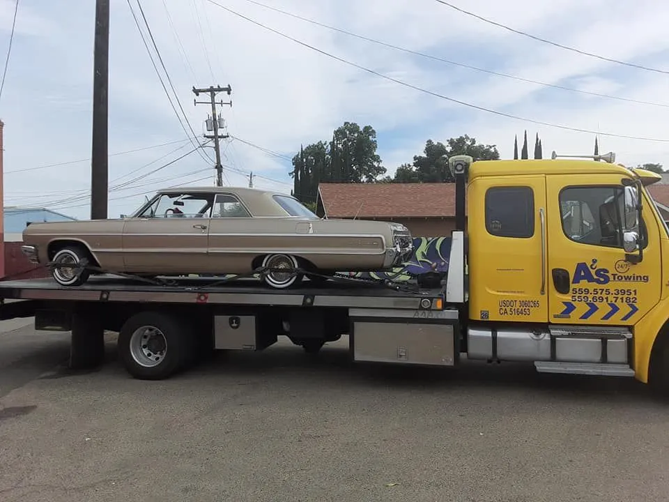

Jump Starts & Dead Batteries
Battery-related no-start situations can be assessed roadside so you can get moving again when a jump start is appropriate.
Roadside assistance in Fresno and Clovis for jump starts, tire changes, fuel delivery, lockouts and towing when a roadside fix is not enough.

Roadside towing assistanceDead batteries, flat tires, empty tanks and lockouts can happen anywhere. Roadside assistance is focused on getting the immediate problem handled safely, with towing available when roadside service is not enough.
Battery-related no-start situations can be assessed roadside so you can get moving again when a jump start is appropriate.
Common roadside issues including tire changes, emergency fuel delivery and vehicle lockouts can be handled based on the situation.
If the vehicle cannot be safely resolved roadside, towing is available to a repair facility or other approved destination.
Call with your exact location, vehicle description and the problem you are experiencing. If you are stopped in an unsafe traffic position, mention that immediately.